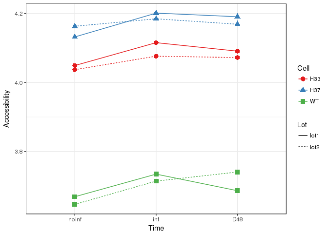
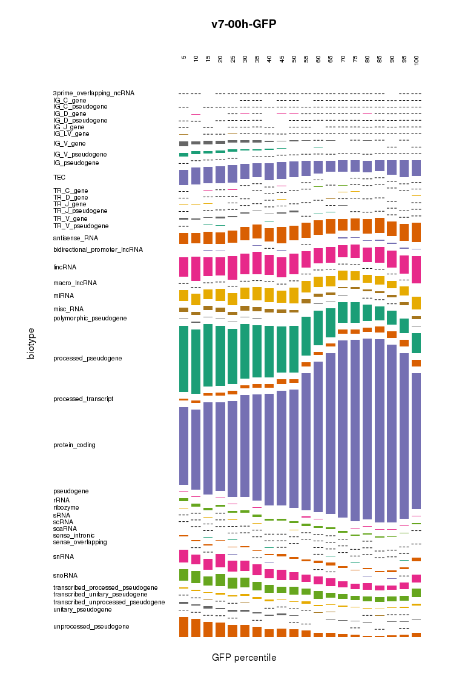
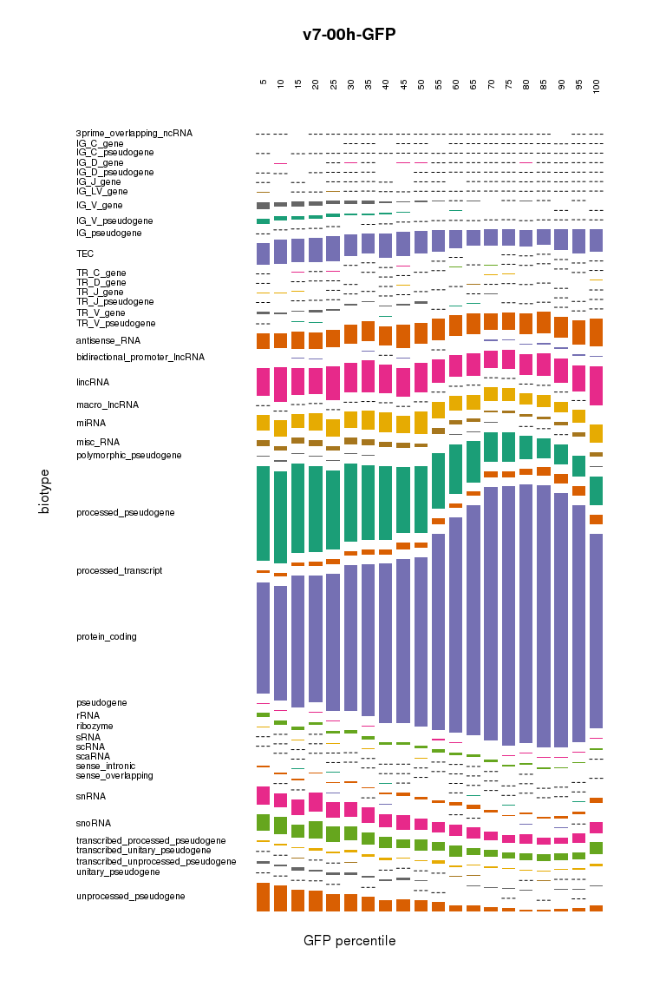
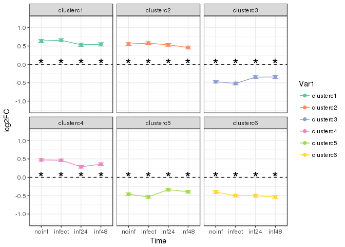
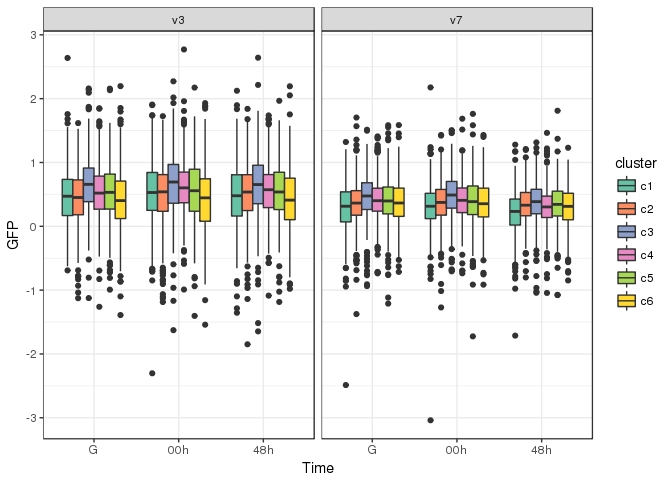
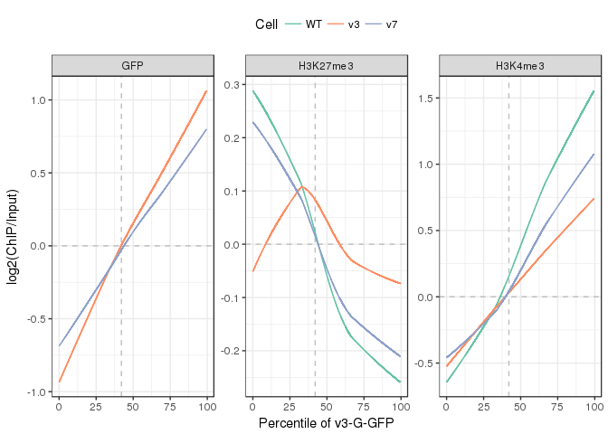
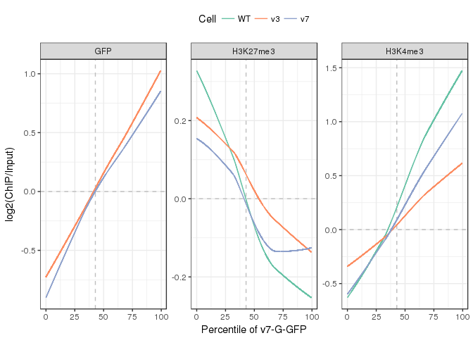
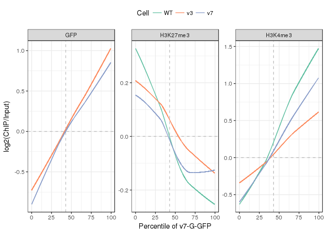
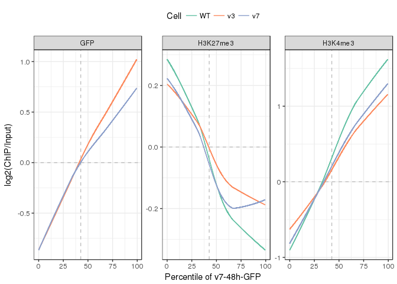
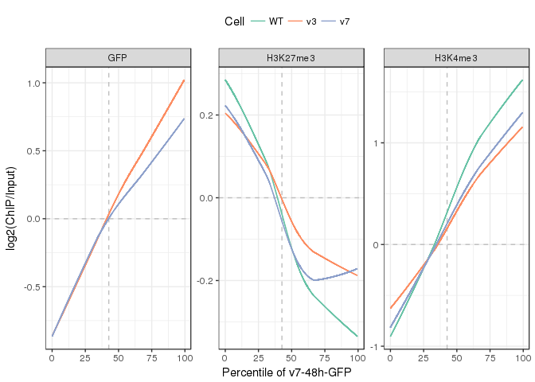

ChIP/ATAC-seq analysis for H3mm7
source("RScript/geomNorm.R")
source("RScript/glmodel.R")
source("RScript/DESeq2Workflow.R")
source("RScript/functionalToys.R")
library(knitr)
library(DT)
library(biomaRt)
library(data.table)
library(dtplyr)
library(dplyr)print(sessionInfo(),locale=FALSE)## R version 3.3.2 (2016-10-31)
## Platform: x86_64-pc-linux-gnu (64-bit)
##
## attached base packages:
## [1] parallel stats4 stats graphics grDevices utils datasets
## [8] methods base
##
## other attached packages:
## [1] biomaRt_2.30.0 DT_0.2
## [3] knitr_1.17 DESeq2_1.14.1
## [5] SummarizedExperiment_1.4.0 Biobase_2.34.0
## [7] GenomicRanges_1.26.4 GenomeInfoDb_1.10.3
## [9] IRanges_2.8.2 S4Vectors_0.12.2
## [11] BiocGenerics_0.20.0 dplyr_0.7.3
## [13] dtplyr_0.0.2 data.table_1.10.4
## [15] ggplot2_2.2.1 RColorBrewer_1.1-2
##
## loaded via a namespace (and not attached):
## [1] locfit_1.5-9.1 Rcpp_0.12.12 lattice_0.20-35
## [4] assertthat_0.2.0 rprojroot_1.2 digest_0.6.12
## [7] R6_2.2.2 plyr_1.8.4 backports_1.1.0
## [10] acepack_1.4.1 RSQLite_2.0 evaluate_0.10.1
## [13] zlibbioc_1.20.0 rlang_0.1.2 lazyeval_0.2.0
## [16] annotate_1.52.1 blob_1.1.0 rpart_4.1-11
## [19] Matrix_1.2-11 checkmate_1.8.3 rmarkdown_1.6
## [22] splines_3.3.2 BiocParallel_1.8.2 geneplotter_1.52.0
## [25] stringr_1.2.0 foreign_0.8-69 htmlwidgets_0.9
## [28] bit_1.1-12 RCurl_1.95-4.8 munsell_0.4.3
## [31] pkgconfig_2.0.1 base64enc_0.1-3 htmltools_0.3.6
## [34] nnet_7.3-12 tibble_1.3.4 gridExtra_2.3
## [37] htmlTable_1.9 Hmisc_4.0-3 XML_3.98-1.9
## [40] bitops_1.0-6 grid_3.3.2 xtable_1.8-2
## [43] gtable_0.2.0 DBI_0.7 magrittr_1.5
## [46] scales_0.5.0 stringi_1.1.5 XVector_0.14.1
## [49] genefilter_1.56.0 bindrcpp_0.2 latticeExtra_0.6-28
## [52] Formula_1.2-2 tools_3.3.2 bit64_0.9-7
## [55] glue_1.1.1 survival_2.41-3 yaml_2.1.14
## [58] AnnotationDbi_1.36.2 colorspace_1.3-2 cluster_2.0.6
## [61] memoise_1.1.0 bindr_0.1firstzero <- function(x) which(sort(x)>0)[1]
makelabel <- function(x,sep="-")
t %.% simplify2array %.% papp(strsplit,sep) %.% as.character %$% x
labelQ <- function(x,n=20) {
qt <- seq(0,1,length=n+1)
cut(x,
include.lowest = TRUE,
breaks = quantile(x,qt),
labels = round(qt*100)[-1]
)
}
tablemd <- function(x,...) knitr::kable(x,format="markdown",...)ensembl <- useMart("ENSEMBL_MART_ENSEMBL",host="asia.ensembl.org")
mart <- useDataset("mmusculus_gene_ensembl",mart=ensembl)
e2g <- getBM(attributes = c("ensembl_gene_id","external_gene_name","gene_biotype"), mart = mart)
e2g <- dplyr::rename(e2g, ens_gene = ensembl_gene_id, ext_gene = external_gene_name, biotype = gene_biotype)
coding <- e2g$ens_gene[e2g$biotype == "protein_coding"]atac<-fread('data/countSubNuc20-150_GENCODEvM9_ATAC-NIH3T3_exonUp2k.edit.txt',skip=1,showProgress = FALSE)
mat <- as.matrix(atac[,-(1:6),with=FALSE])
colnames(mat) <- sub("lot12","lot2",colnames(mat))
rownames(mat) <- sub('\\..*$','',atac$Geneid)
mat <- mat[rowSums(mat)>0,]
tbN <- data.frame(t(simplify2array(strsplit(colnames(mat),'-')))[,-1])
colnames(tbN) <- c('clone','time','lot')
ddsN <- DESeqDataSetFromMatrix(mat,tbN,~time+clone)
modelN <- DESeq(ddsN,fitType = 'local')## estimating size factors## estimating dispersions## gene-wise dispersion estimates## mean-dispersion relationship## final dispersion estimates## fitting model and testingrlN <- rlog(modelN,blind=FALSE)
resN7 <- results(modelN,contrast = c('clone','H37','WT'))
resN3 <- results(modelN,contrast = c('clone','H33','WT'))
resN73 <- results(modelN,contrast = c('clone','H37','H33'))
tblN <- data.table(ens_gene=rownames(resN7),tbl_dt(resN7)) %>%
filter(padj<0.1) %>% right_join(tbl_dt(e2g),.,by="ens_gene")
summary(resN7)##
## out of 44009 with nonzero total read count
## adjusted p-value < 0.1
## LFC > 0 (up) : 228, 0.52%
## LFC < 0 (down) : 579, 1.3%
## outliers [1] : 0, 0%
## low counts [2] : 24744, 56%
## (mean count < 3)
## [1] see 'cooksCutoff' argument of ?results
## [2] see 'independentFiltering' argument of ?resultslN <- assay(rlN)
mN <- data.frame(t(simplify2array(strsplit(sub('3T3-','',colnames(lN)),'-'))))
colnames(mN) <- c("Cell","Time","Lot")
mN$Time <- factor(mN$Time,c('noinf','inf','D48'))
gD <- na.omit(with(resN7,rownames(resN7)[padj < 0.1 & log2FoldChange < 0]))
mN$Accessibility <- colMeans(lN[gD,])
ggplot(mN,aes(Time,Accessibility,group=Cell:Lot,colour=Cell,lty=Lot,shape=Cell)) +
geom_point(size=3) + geom_line() + theme_bw() +
scale_color_brewer(palette="Set1")
gU <- na.omit(with(resN7,rownames(resN7)[padj < 0.1 & log2FoldChange > 0]))
mN$Accessibility <- colMeans(lN[gU,])
ggplot(mN,aes(Time,Accessibility,group=Cell:Lot,colour=Cell,lty=Lot,shape=Cell)) +
geom_point(size=3) + geom_line() + theme_bw() +
scale_color_brewer(palette="Set1")
chipmat <- fread('data/countGENCODEvM9_3T3ChIPseq.edit.txt',skip=1,showProgress=FALSE)
chipseq <- chipmat %>% dplyr::select(-(1:6)) %>% as.matrix
colnames(chipseq) <- sub('GFP-','-',sub('^H3','',sub('^3T3-','',colnames(chipseq))))
rownames(chipseq) <- sub('\\..*$','',chipmat$Geneid)
chipseq <- chipseq[apply(chipseq,1,sum) > 0,]
chipseq <- gscale(as.matrix(chipseq)+1)
chipnames <- colnames(chipseq)[grep("input",colnames(chipseq),invert=TRUE)]
signal <- log2(chipseq[,chipnames]+1) - log2(chipseq[,sub('-[^-]*$','-input',chipnames)]+1)
signal <- data.table(ens_gene=rownames(signal),signal)ddsA <- chipmat %>% dplyr::select(-(1:6)) %>%
DESeqDataSetFromMatrix(.,data.frame(colnames(.)),~1)
rldA <- rlog(ddsA,blind=FALSE,fitType="local")
chipseqd <- assay(rldA)
colnames(chipseqd) <- sub('GFP-','-',sub('^H3','',sub('^3T3-','',colnames(chipseqd))))
rownames(chipseqd) <- sub('\\..*$','',atac$Geneid)
chipseqd <- chipseqd[rowSums(chipseqd)>0,]signald <- chipseqd[,chipnames] - chipseqd[,sub('-[^-]*$','-input',chipnames)]
signald <- data.table(ens_gene=rownames(signald),signald)
asig <- inner_join(tbl_dt(e2g),signald,by="ens_gene")
gfp <- signald %>% dplyr::select(ends_with("GFP")) %>% colnames
for(i in gfp[c(1,4)]){
asig %>% dplyr::select_(GFP=as.symbol(i),"biotype") %>%
summarize(GFP=labelQ(GFP),biotype) %>% table %>%
plot(las=2,xlab="GFP percentile",main=i,col=brewer.pal(8,"Dark2"),border=FALSE)
} 

signald <- signald %>% dplyr::filter(ens_gene %in% coding)NIH3T3 H3vOE
defn <- getdef("data/table_3T3RNAseq.txt")
ddsn <- getdds("data/countGENCODEvM9_3T3RNAseq.edit.txt",defn,~time+cond)## estimating size factors## estimating dispersions## gene-wise dispersion estimates## mean-dispersion relationship## final dispersion estimates## fitting model and testingrldn <- rlog(ddsn,blind=FALSE)
tablemd(colData(ddsn))| cond | time | rep | clone | sizeFactor | |
|---|---|---|---|---|---|
| X3T3.WT.noinf | WT | noinf | Rep1 | WT_Rep1 | 1.0082323 |
| X3T3.WT.infect | WT | infect | Rep1 | WT_Rep1 | 1.2420505 |
| X3T3.WT.inf24 | WT | inf24 | Rep1 | WT_Rep1 | 0.9808936 |
| X3T3.WT.inf48 | WT | inf48 | Rep1 | WT_Rep1 | 0.9110183 |
| X3T3.H3v3.noinf | H3v3 | noinf | Rep1 | H3v3_Rep1 | 1.1716920 |
| X3T3.H3v3.infect | H3v3 | infect | Rep1 | H3v3_Rep1 | 1.0533892 |
| X3T3.H3v3.inf24 | H3v3 | inf24 | Rep1 | H3v3_Rep1 | 0.9724215 |
| X3T3.H3v3.inf48 | H3v3 | inf48 | Rep1 | H3v3_Rep1 | 0.8092273 |
| X3T3.H3v7.noinf | H3v7 | noinf | Rep1 | H3v7_Rep1 | 1.1884297 |
| X3T3.H3v7.infect | H3v7 | infect | Rep1 | H3v7_Rep1 | 1.1936027 |
| X3T3.H3v7.inf24 | H3v7 | inf24 | Rep1 | H3v7_Rep1 | 0.9042245 |
| X3T3.H3v7.inf48 | H3v7 | inf48 | Rep1 | H3v7_Rep1 | 0.8198526 |
set.seed(333)
resn <- results(ddsn,contrast=c("cond","H3v7","WT"))
tblns <- timecoursePlots(resn[resn$baseMean>100,],rldn,k=6)## Warning in lda.default(x, grouping, ...): variables are collinear


#showDT(tblns)evalFC_NIH3T3 <- function(signal,tbl,density=FALSE){
dat <- tbl %>% dplyr::select(ens_gene,cluster) %>% inner_join(signal,by='ens_gene')
if(density) print(
ggplot(reshape2::melt(dat),aes(value,fill=variable)) +
geom_density() + facet_wrap(~variable)
)
model <- glmodel(dat[,-(1:2),with=FALSE],model.matrix(~cluster+0,dat))
m <- reshape2::melt(model$beta)
lab <- makelabel(m$Var2,"\\.")
colnames(lab) <- c("Cell","Cond","Time")
m <- data.frame(lab,m)
m$Time <- factor(m$Time,c("noinf","infect","inf24","inf48"))
m$sdev <- as.numeric(sqrt(model$betavar))
# Wald p with Bonferroni correction
smark <- data.frame(lab,reshape2::melt(model$wald.p)) %>%
filter(value * length(model$wald.p) < 1e-3) %>% dplyr::select(Time,Var1)
print(
ggplot(m,aes(Time,value,group=Var1,colour=Var1)) +
geom_hline(yintercept=0,linetype=2) +
geom_point(size=2) + geom_line() + ylab("log2FC") +
theme_bw() + scale_color_brewer(palette="Set2") + ylim(-1.2,1.2) +
geom_errorbar(aes(ymin=value-1.96*sdev,ymax=value+1.96*sdev),width=.3) +
geom_text(aes(Time,0),label="*",size=8,colour="black",data=smark) +
facet_wrap(~Var1,2,3)
)
invisible(dat)
}sig73 <- data.table(assay(rldn)[,9:12] - assay(rldn)[,5:8],keep.rownames = "ens_gene")
evalFC_NIH3T3(sig73,tblns,TRUE)## Warning in melt.data.table(dat): To be consistent with reshape2's melt,
## id.vars and measure.vars are internally guessed when both are 'NULL'. All
## non-numeric/integer/logical type columns are conisdered id.vars, which in
## this case are columns [ens_gene, cluster]. Consider providing at least one
## of 'id' or 'measure' vars in future.

sig7w <- data.table(assay(rldn)[,9:12] - assay(rldn)[,1:4],keep.rownames = "ens_gene")
evalFC_NIH3T3(sig7w,tblns) 
sig3w <- data.table(assay(rldn)[,5:8] - assay(rldn)[,1:4],keep.rownames = "ens_gene")
evalFC_NIH3T3(sig3w,tblns) ## Warning: Removed 1 rows containing missing values (geom_errorbar).
m <- tblns %>%
inner_join(signald,by="ens_gene") %>%
dplyr::select(cluster,ends_with("-GFP")) %>%
reshape2::melt(.)## Warning in melt.data.table(.): To be consistent with reshape2's melt,
## id.vars and measure.vars are internally guessed when both are 'NULL'. All
## non-numeric/integer/logical type columns are conisdered id.vars, which in
## this case are columns [cluster]. Consider providing at least one of 'id' or
## 'measure' vars in future.label <- data.frame(makelabel(m$variable))
colnames(label) <- c("Cell","Time","ChIP")
label$Time <- factor(label$Time,c("G","00h","48h"))
m <- data.frame(m,label)
ggplot(m,aes(Time,value,fill=cluster)) +
geom_boxplot() + facet_wrap(~Cell) + ylab("GFP") +
theme_bw() + scale_fill_brewer(palette="Set2")
for(i in c("v3","v7")){
for(j in c("G","00h","48h")){
target <- paste(i,j,"GFP",sep="-")
A <- tbl_dt(e2g) %>%
dplyr::filter(biotype=="protein_coding") %>%
inner_join(signald,by="ens_gene") %>%
dplyr::select(-ends_with("H3v3")) %>%
arrange_(as.symbol(target)) %>%
dplyr::select(contains(paste0("-",j,"-"))) %>%
apply(2,function(x) lowess(x)$y) %>% as.matrix
m <- reshape2::melt(A)
label <- data.frame(makelabel(m$Var2))
colnames(label) <- c("Cell","Time","ChIP")
label$Time <- factor(label$Time,c("G","00h","48h"))
m <- data.table(m,label)
p <- ggplot(m,aes(Var1/20886*100,value,colour=Cell)) +
geom_hline(yintercept=0,col="grey",linetype=2) +
geom_vline(xintercept=firstzero(A[,target])/nrow(A)*100,col="grey",linetype=2) +
geom_line() + facet_wrap(~ChIP,scale="free_y",1,4) +
theme_bw() + theme(legend.position="top") +
xlab(sprintf("Percentile of %s",target)) +
ylab("log2(ChIP/Input)") +
scale_color_brewer(palette="Set2")
print(p)
}
}
 
 

tbl <- tblns
levels(tbl$cluster) <- c("SA","UA","DB","DA","UB","SB")
m73 <- resN73 %>% tbl_df %>%
data.table(keep.rownames = "ens_gene") %>%
right_join(tbl %>% dplyr::select(ens_gene, cluster, log2FC_E = log2FoldChange)) %>%
dplyr::select(ens_gene, cluster, log2FC_E, log2FC_A = log2FoldChange, padj) %>%
inner_join(e2g, .) %>% arrange(cluster)## Warning in as.data.frame(x, row.names = NULL, optional = optional, ...):
## Arguments in '...' ignored## Joining, by = "ens_gene"
## Joining, by = "ens_gene"p <- ggplot(m73, aes(log2FC_E, log2FC_A)) +
geom_hline(yintercept = 0, linetype = 2) +
geom_vline(xintercept = 0, linetype = 2) +
geom_point(alpha = 0.1, size = 0.6) + theme_bw() +
geom_point(
aes(colour = cluster, size = -log10(padj)),
data = m73 %>% dplyr::filter(padj < 0.1, cluster=="UA"),
alpha = 0.6
) +
xlab("Gene expression log2(H3mm7/Control)") +
ylab("Chromatin accessibility log2(H3mm7+/H3.3+)") +
scale_color_manual(values="#FC8D62")
print(p + coord_fixed() + theme(legend.position="top"))## Warning: Removed 17 rows containing missing values (geom_point).